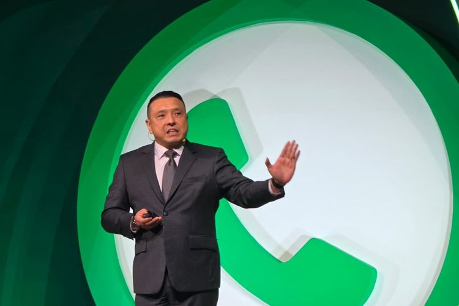
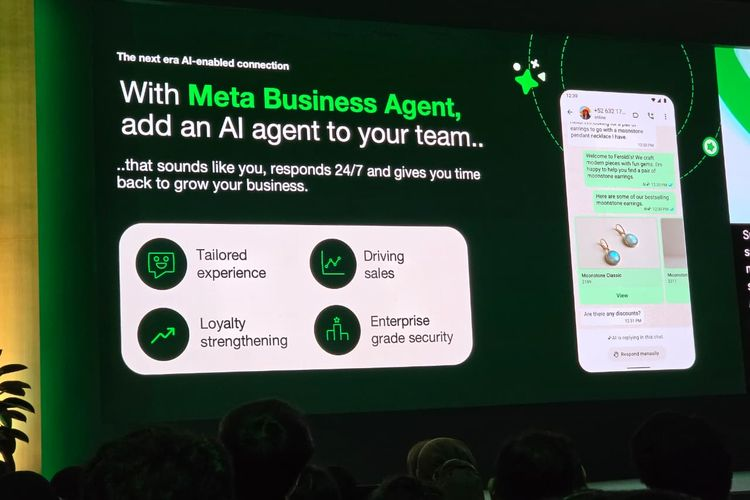

Meta Business Agent Resmi di Indonesia, “Karyawan AI” yang Bisa Kerja 24 Jam Nonstop
6 agustus 2026
KOMPAS.com - Induk WhatsApp, Meta resmi meluncurkan fitur baru bernama Meta Business Agent di Indonesia. Kehadiran Meta Business Agent di Indonesia diumumkan dalam acara WhatsApp Business Summit (WABS) Indonesia 2026 yang digelar di Jakarta Selatan, Selasa (11/8/2026). Sebelumnya, fitur ini sudah lebih dulu diumumkan oleh CEO Meta Mark Zuckerberg pada awal Juni lalu. Selang sekitar sebulan, agen berbasis kecerdasan buatan (AI) yang dirancang untuk membantu bisnis melayani pelanggan secara otomatis melalui WhatsApp ini akhirnya hadir di Tanah Air. "Beberapa tahun lalu, saya mengatakan bahwa setiap bisnis nantinya akan memiliki agen AI, seperti halnya mereka memiliki alamat e-mail, situs web, dan akun media sosial. Dan itu terjadi lebih cepat dari yang saya perkirakan," kata Zuckerberg dalam video yang ditayangkan di WABS Indonesia 2026.

"Hari ini, saya ingin memperkenalkan Meta Business Agent, yang memberikan setiap bisnis, berapa pun ukurannya, sebuah agen untuk berbicara dengan pelanggan dan membantu menjalankan operasional mereka," lanjut dia.
Meta Business Agent bisa dibilang seperti "karyawan AI" yang dapat bekerja 24 jam sehari dan tujuh hari seminggu.
Agen AI ini bisa bekerja "sat-set" untuk menjawab pertanyaan pelanggan secara real-time, memberikan rekomendasi produk, membuat jadwal janji temu, mengidentifikasi calon pelanggan potensial, hingga membantu menyelesaikan transaksi penjualan
Country Director Indonesia Meta, Pieter Lydian mengatakan kehadiran fitur ini di Indonesia menjadi hal penting
Ini mengingat WhatsApp saat ini bukan lagi sekadar aplikasi untuk bertukar pesan dengan teman atau keluarga.
Platform tersebut juga semakin banyak dimanfaatkan untuk membangun dan mengembangkan bisnis.
"Kini, ada sekitar 1 miliar percakapan antara pengguna dan bisnis setiap harinya secara global," kata Pieter dalam keynote WABS Indonesia 2026. Menurut Pieter, fenomena tersebut juga terjadi di Indonesia, yang menurutnya merupakan salah satu pasar terbesar WhatsApp.
Bisa layani konsumen tanpa batasan jam

Meta Business Agent ibarat karyawan AI yang bisa bekerja 24 sepekan nonstop dengan ritme yang sat-set.(KOMPAS.com/Galuh Putri Riyanto)